KING OF THE TOWN
DATE: may 2021 TECH: html, css, procreate ROLE: tech/art lead PURPOSE: school project
Final assignment for STL209: Transformations in Engineering and the Arts. A comedic digital exploration of personality quizzes and choose-your-own-adventure narratives. Intended for display on three separate touch-screen monitors.
Can be played here. Access repository here.
DATE: may 2021 TECH: html, css, procreate ROLE: tech/art lead PURPOSE: school project
Final assignment for STL209: Transformations in Engineering and the Arts. A comedic digital exploration of personality quizzes and choose-your-own-adventure narratives. Intended for display on three separate touch-screen monitors.
Can be played here. Access repository here.


 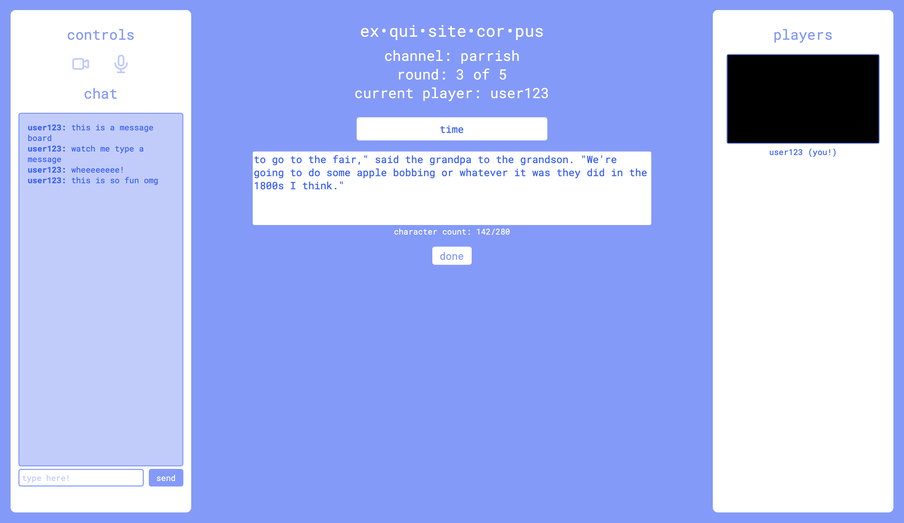
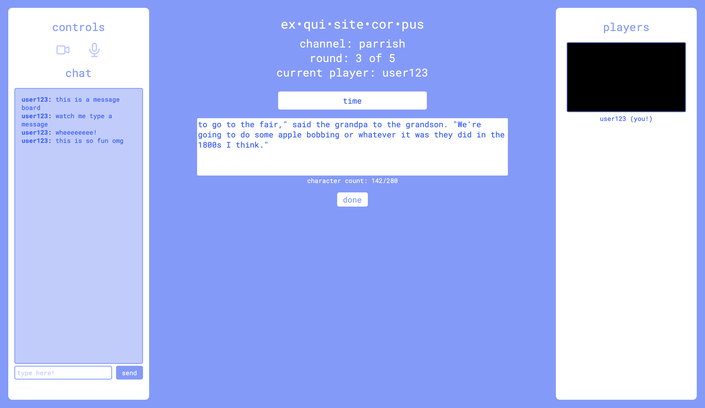
 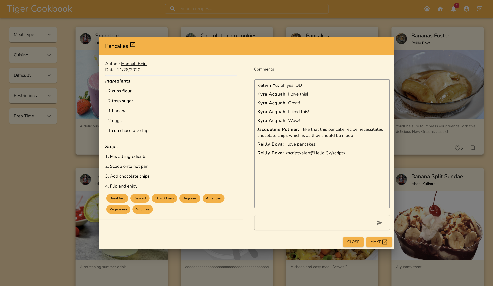
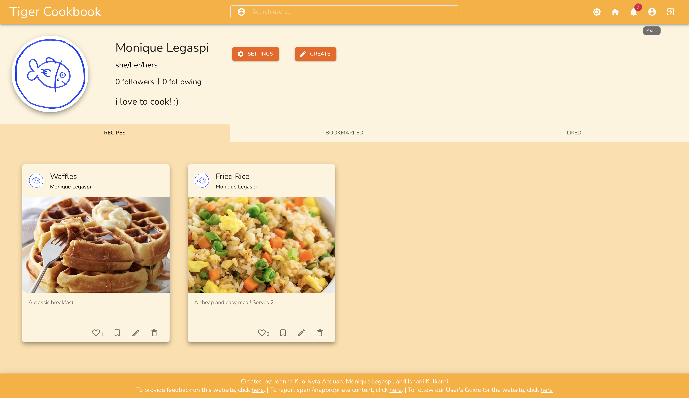
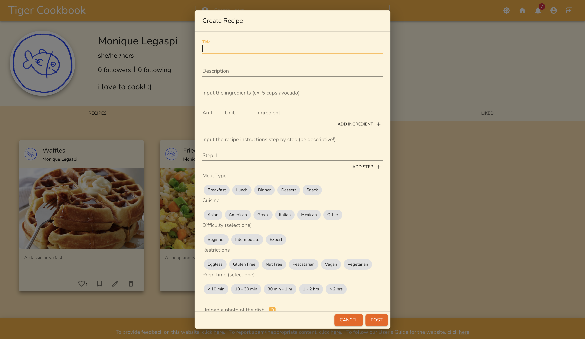
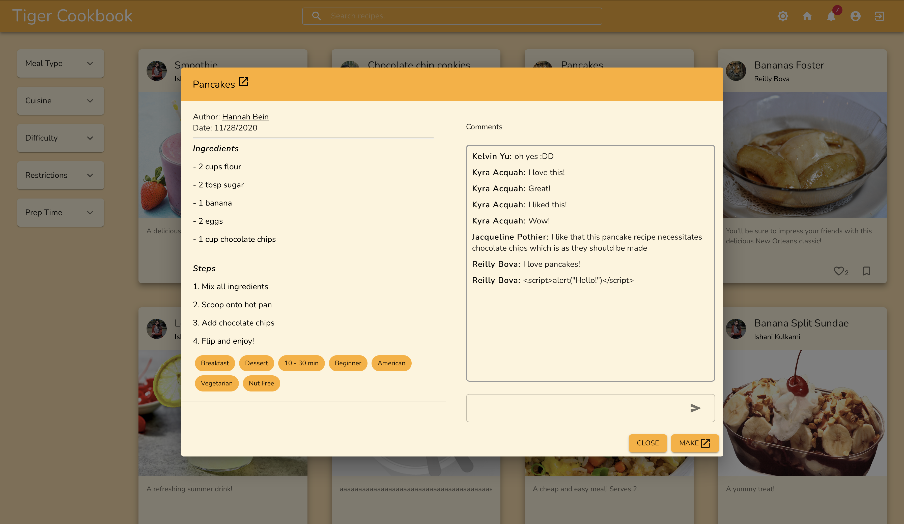
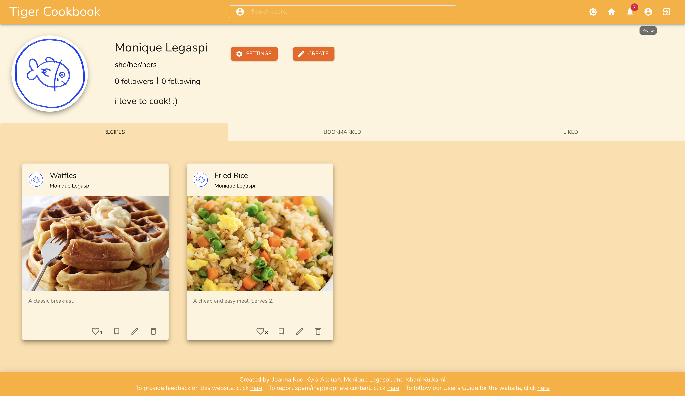
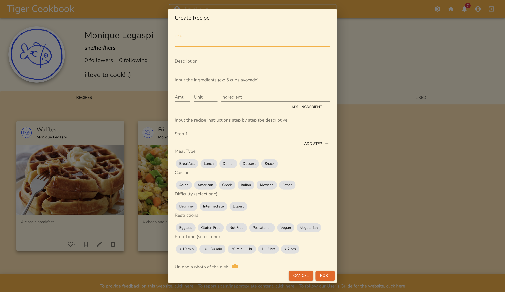
 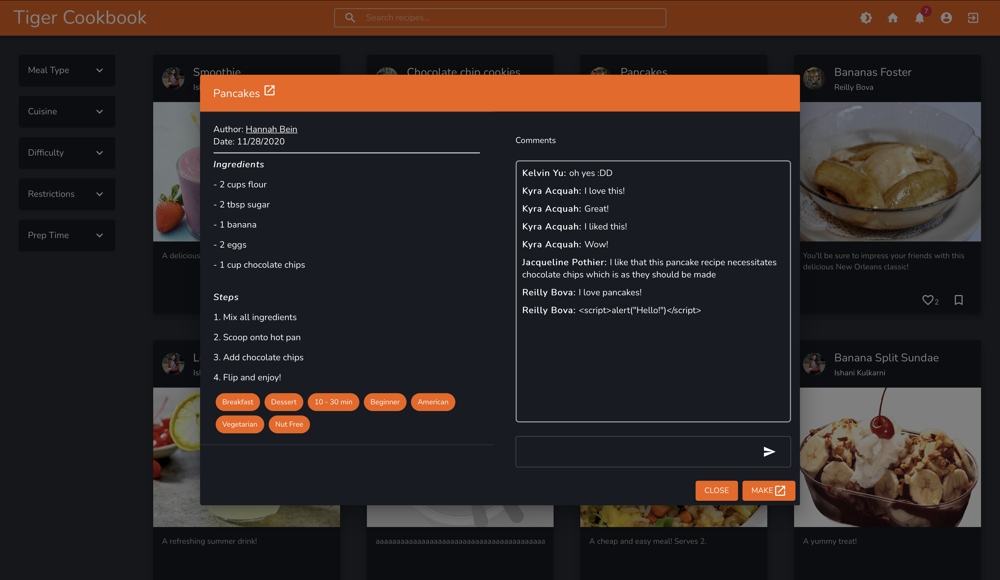
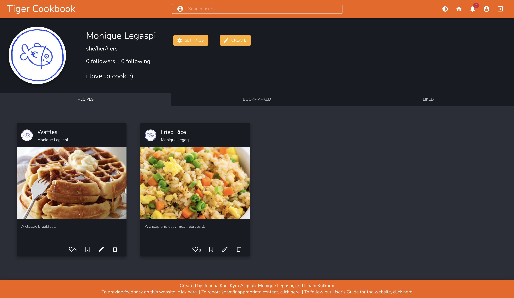
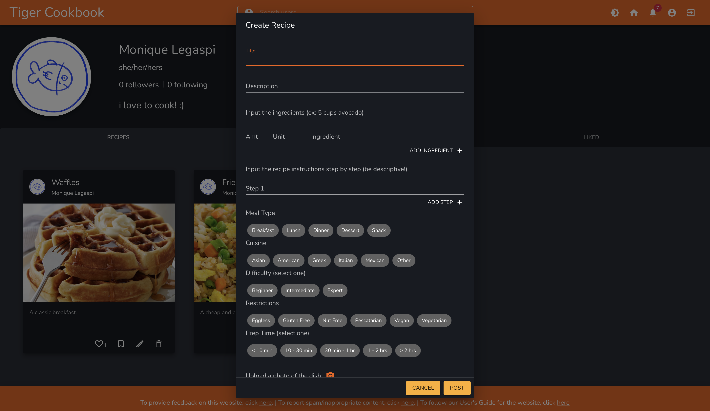
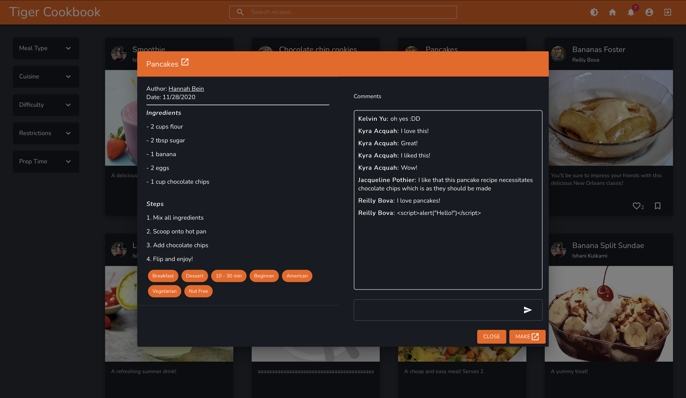
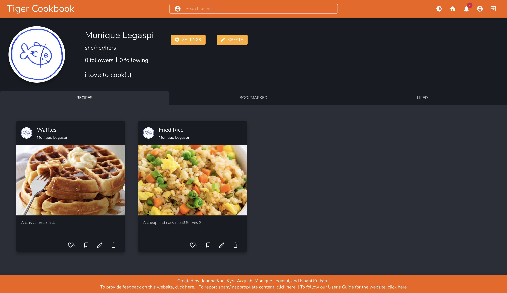
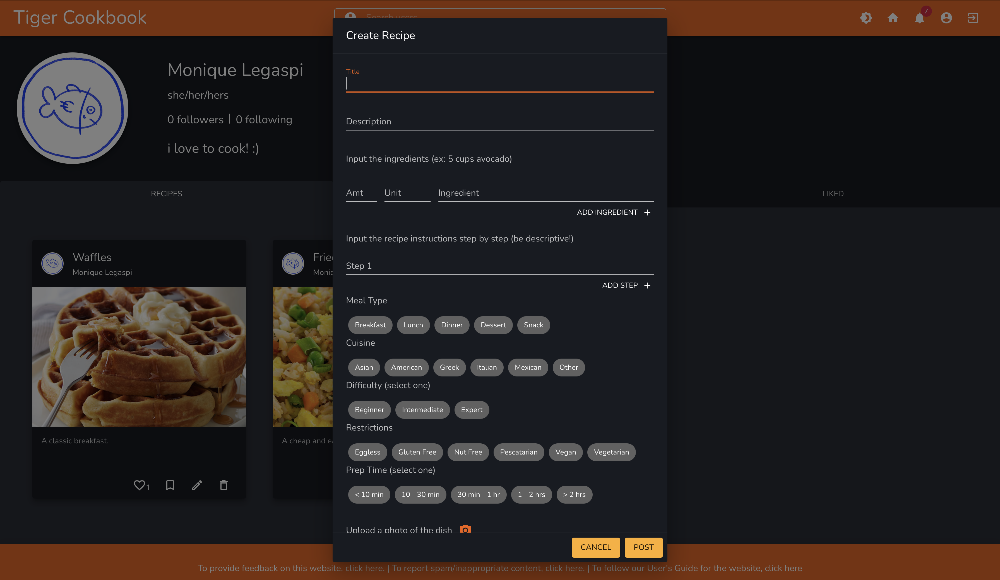